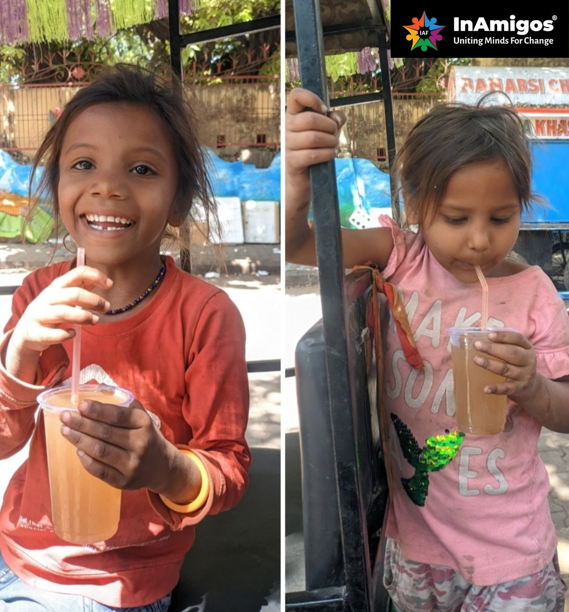

Project SEVA
Food, clothing, and basic relief
Supports underprivileged families through meal distribution, clothing drives, winter relief, and street-level service that protects dignity during hardship.